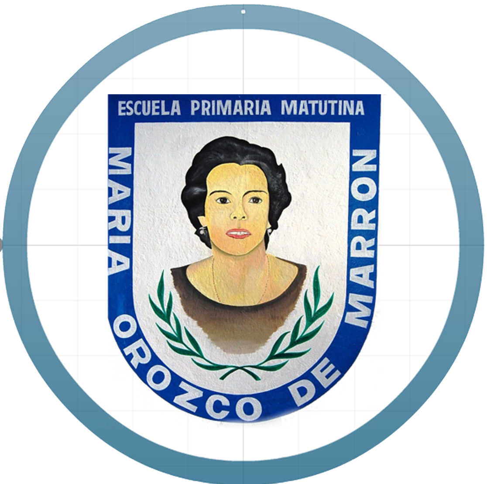

..:: Mi escuela... es mi segunda casa; pero mi casa es mi primer escuela::..

:-:NUESTROS PROYECTOS:-:
..:: TABLILOCAS ::..
Es un proyecto colaborativo dirigido a los alumnos de Nivel Primaria, que apoya la asignatura de matemáticas, para que razonen, aprendan y se apropien de las tablas de multiplicar de una manera significativa.
TabliLocas proyecto de Acción Docente, como una opción para aplicar estrategias lúdicas donde los alumnos practiquen y se apropien de las tablas de multiplicar garantizando el aprendizaje didáctico, significativo y divertido, brindándoles la oportunidad de utilizar la computadora haciendo uso del Internet en donde utilice diferentes sitios virtuales para lograr el dominio de las tablas de multiplicar...
12
34
Wagner Salas
..:: CUIDEMOS NUESTRO MUNDO ::..
En la actualidad nuestro mundo está siendo destruido por el mismo hombre, necesitamos hacer conciencia de la importancia del cuidado que requiere, por lo tanto es primordial que nos preguntemos.
Porque lo necesitamos para sobrevivir; la tierra es nuestro hogar y entre más se dañe, las consecuencias repercutirán en el hombre...
12
34
Wagner Salas
..:: NUESTRO CUERPO CAMBIA ::..
El proyecto "Nuestro cuerpo cambia, y nosotros, conocemos la sexualidad y su responsabilidad" , está dirigido a niños de quinto y sexto de primaria en la asignatura de ciencias naturales.
Las actividades sugeridas en este proyecto permitirán a los participantes realizar acciones que los lleven a conocer la sexualidad y su responsabilidad para ejercerla según sus derechos...